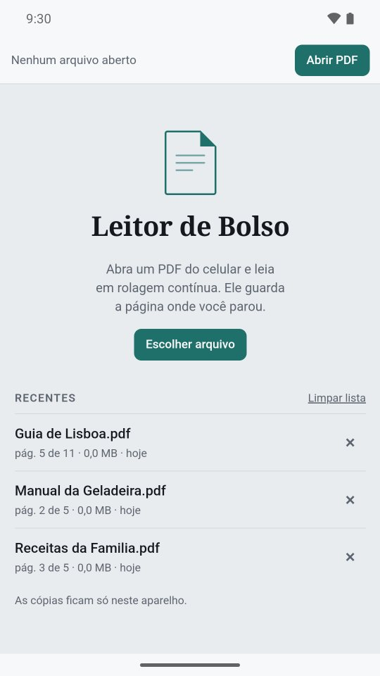
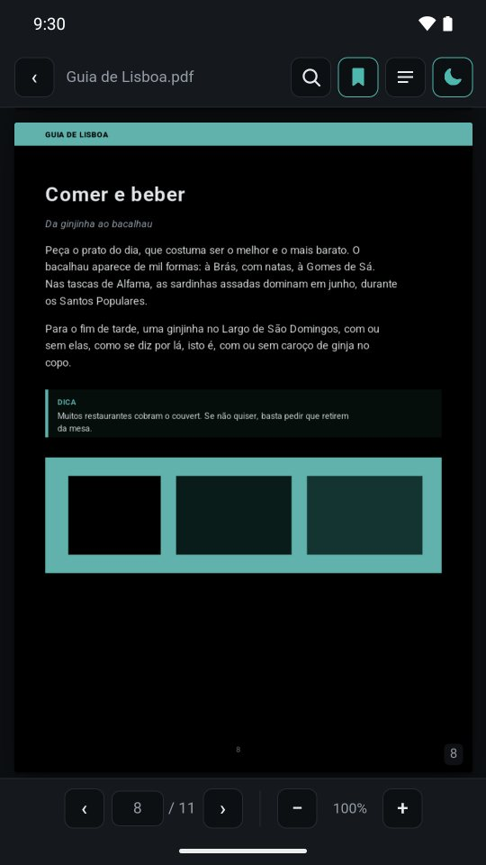

Leia do seu jeito
- Rolagem contínua, com páginas nítidas mesmo em zoom alto
- Zoom com pinça, com os botões + e − ou com toque duplo
- Retomada na página onde você parou, em cada arquivo
- Um toque esconde as barras, e a tela não apaga durante a leitura
Situação: Em breve na Play Store
Na leitura, busca sem acento, índice, favoritos e modo escuro. No scanner, a foto do documento vira PDF, com o texto reconhecido e pronto para corrigir. Não exige cadastro, e seus arquivos não saem do aparelho.
Um app da Edelmann Tecnologia

Scanner
Além de ler, o Leitor de Bolso digitaliza documentos. Cada foto vira uma página inteira do PDF, sem cortes, e o texto é reconhecido no próprio celular, sem internet e sem permissão de câmera.
As telas
Capturas reais do app no Android. Deslize para ver as sete.





Recursos
Manuais, contratos, livros, receitas, material de estudo: tudo o que chega em PDF.
Seus dados
O Leitor de Bolso desenha o PDF e reconhece o texto no próprio aparelho. Nenhum conteúdo sai do celular, e o app não executa scripts embutidos em PDFs.
Ler a política completaPlataformas
No Android, o app vira o “Abrir com” padrão. No iPhone e no computador, ele roda pelo navegador e, depois de instalado, abre sem internet.
Situação: Em breve na Play Store
Situação: Em breve
Situação: Em breve
Perguntas
É. Sem anúncios e sem cadastro.
Não. O app para Android nem pede permissão de internet, e o scanner reconhece o texto sem ela. A versão para navegador só precisa de conexão na primeira abertura.
Não. Ao fotografar, o app abre a câmera do sistema, sem permissão própria; também é possível escolher uma imagem já salva. As fotos ficam só na memória do app enquanto você monta o PDF.
Ainda não. O Leitor de Bolso lê e cria PDFs; anotações, grifos, formulários e assinatura ficam para versões futuras.
Guarda uma cópia dos últimos 8 PDFs abertos, só no armazenamento privado do app, para a lista de recentes. Cada item tem um ×, “Limpar lista” apaga tudo, e desinstalar o app também.
Abre. O app pede a senha, avisa se estiver errada e não a guarda em lugar nenhum.
Contato
Fale com a Edelmann para tirar uma dúvida, sugerir um recurso ou pedir o app para Android.